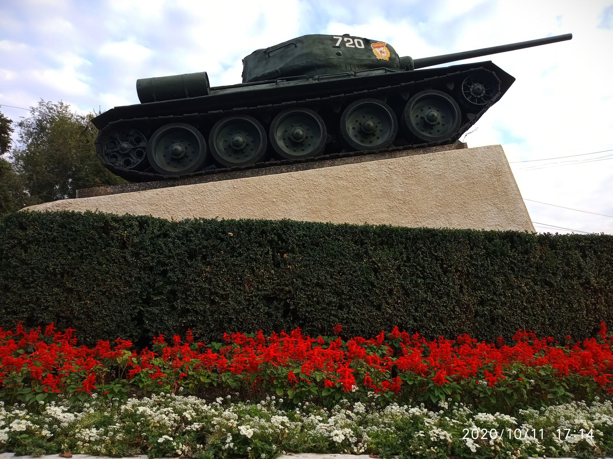
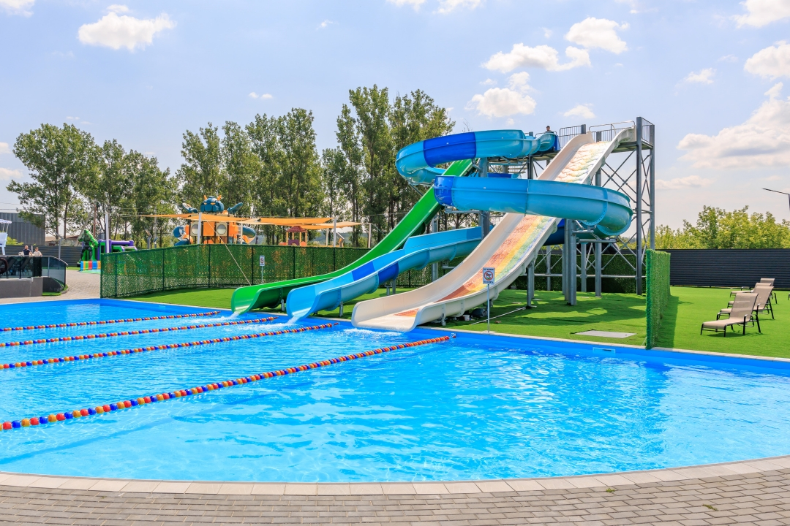

Достопримечательности
Центральный парк имени Михая Волонтира

это одно из самых любимых мест отдыха жителей города. Просторные аллеи, ухоженные зелёные зоны и уютные скамейки создают атмосферу спокойствия и уюта. Здесь можно прогуляться в тени деревьев, провести время с семьёй или просто насладиться природой в самом центре города. Парк является важной частью городской жизни и часто становится площадкой для культурных мероприятий и праздников.
Танка Т-34

В центре Бельцы, на главной площади города, расположен мемориал Т-34 — один из ключевых символов военной истории региона. Этот памятник посвящён подвигу солдат и напоминает о событиях прошлого, сыгравших важную роль в судьбе страны. Танк с бортовым номером 720 гармонично вписывается в городской пейзаж и привлекает внимание как местных жителей, так и туристов. Мемориал стал важной частью культурного наследия города и одним из обязательных мест для посещения.
Аквапарк «Фантастик»

Аквапарк Фантастик — это современное пространство для яркого отдыха и незабываемых впечатлений в городе Бельцы. Здесь каждый найдёт себе занятие по душе: от захватывающих водных горок до спокойных зон с бассейнами, где можно расслабиться и отдохнуть в приятной атмосфере. Это отличное место как для весёлого времяпрепровождения с друзьями, так и для семейного отдыха. Аквапарк «Фантастик» — это не просто развлекательный комплекс, а настоящий мир водных приключений, где каждая деталь продумана для комфорта гостей. Удобное расположение позволяет легко включить посещение аквапарка в план прогулки по городу, делая его одной из самых привлекательных точек для отдыха как для местных жителей, так и для гостей региона.